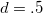
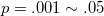
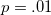
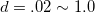
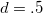
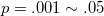
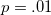
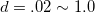

| 心理学の再現可能性 |
| 心理学の再現可能性 |
Perspectives on Psychological Science (2012)における特集
Brian Nosek らによる大規模な追試 1
本来差がないデータセットでも、データの取得ごとに検定を行うと22%のケースで有意差が見られた2
多要因のANOVAで探索的に検定を行うと、第1種の誤りは14%になる。
 値
値過去の心理学研究について調査したところ、
→ 値に依存した解釈が効果量を無視したものになるのであれば、結果の再現性を低めるのではないか。
メモ
効果量を考慮したところで、その推定精度が考慮されていなければ、再現可能性は担保されないままではないのか？
メモここまで
値の分布過去の心理学研究について調査したところ、
報告されていたの分布は、.05よりわずかに小さいところでスパイク状に増加する 5
→ 近年出版への圧力が高まってきていることによって生じているのでは？6
メモ
検定力分析が一般になってきたために生じてきた、とは解釈できないのか？
メモここまで
標本サイズが値に与える影響
標本の大きい研究で無理矢理有意にさせる → 標本の小さい追試では再現できない（有意にならない）
検定の繰り返し
値と効果量の不一致
APAのマニュアルでは、例数設計の手続きを明示することを求めている。
正確度分析
事前に設定したCIに収まるよう 7
適応的な停止規則
事前に設定した規則に達した段階でデータ収集を停止
値からベイズファクターを用いた判断への転換8
ベイズファクターを用いた場合の判断基準は仮説検定に比べて極めて厳しい
有意水準を .005 あるいは .001 にするくらいの厳しさがないと十分な再現可能性が担保されない
メモ
そもそも、ベイズファクターの基準自体が定まっていないのでは？
また、例数設計に関して言えば、検定力分析に比べてCIにもとづく方が極めて厳しくなる（大きいサンプルが要求される）。メモここまで
Footnotes
| 心理学の再現可能性 |
 には負の相関があるが、のときはまで、のときはまでばらついていた
には負の相関があるが、のときはまで、のときはまでばらついていた